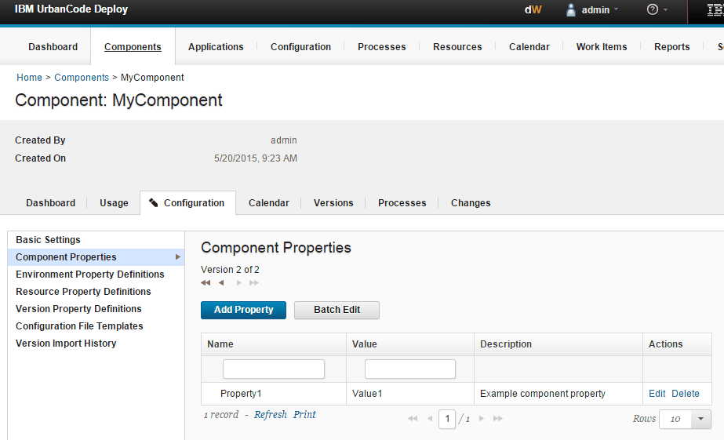
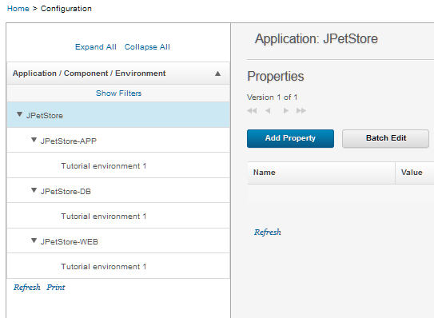
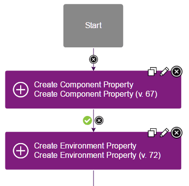

Creating, setting, and editing properties
Properties can be created for most elements, including components, resources, applications, and agents. You can set and change properties in many different ways.
A property represents a user-defined parameter. Properties are typically accessed in processes. For information about using properties, see Referring to properties.
- Retrieving property values from external files
You can specify that a property takes a value from an XML or JSON file over HTTP. Then, when you run the process, the server prompts you with a list of values from that file. - Passing properties from blueprints to the resource tree
From the blueprint designer, you can set component environment properties and component resource properties in blueprint source code.
Parent topic: Properties
Setting properties manually
You can create and edit properties on many elements by opening the element and going to its Configuration tab.
To edit most of the properties for an element, open the element, go to its Configuration tab (not the Configuration tab at the top of the page), and then click element_type Properties. For example, to edit component properties, click the component, click Configuration, and then click Component Properties, as shown in the following figure.

However, if you created an application from a template, any environment or application properties that you specified are not available on the Configuration tabs. You can view and edit, but not delete, these properties by clicking the element's Configuration tab (not the Configuration tab at the top of the page), and then clicking Basic Settings.
To add a property, click Add Property, and provide the information about the property, including its name, value, and description. You can also edit multiple properties at once by clicking Batch Edit. Then, in batch mode, specify the properties in name-value pairs that are separated by line breaks, as in the following example:
Property1=Value1
Property2=Value2
Property3=Value3
Escape backslash, equals, and colon characters (\, =, :) with a backslash, for example:
WindowsPath=C\:\\myfolder\\myfile.txt
PropertyWithColons=This string\: has a colon
To create a property, put the new property and its value on a new line. To include a line break in a property value, use "\n". Be sure to click Save to save your changes when you are finished editing multiple properties. To close batch edit mode, use the Use Table command. Secured values are encrypted when they are displayed in batch mode. If you modify an encrypted value, the modifications are encrypted when you exit edit mode.
Setting properties with the Configuration tab
On the top-level Configuration page you can directly manage properties for applications, components, and environments.
Access the Configuration page by clicking the Configuration tab. From this page, you can add properties to applications, components, and environments.

Setting properties in processes
Several different steps are available to create and set properties in processes.
For example, the IBM UrbanCode Deploy Components plug-in contains the Create Component Property step. This step creates a component property or changes the value of an existing component property.

Note: If you use these steps to change the value of a property, the new property value is not available until the next process runs. Later steps in the same process use the same value that the property had when the process started.
Setting properties with the REST API and command-line client
Several commands in the REST API and in the command-line client can set properties. See REST API reference and Command-line client (CLI) reference.
Setting output properties
To pass properties from one step to another within a process, you can use output properties. See Output properties.
Passing properties from blueprints to the resource tree
You can pass properties from blueprints to the server. See Passing properties from blueprints to the resource tree.
Setting properties from external files
You can retrieve property values from an external file. See Retrieving property values from external files.